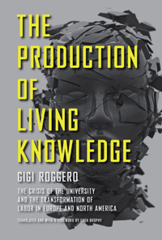

How universities in Europe and North America are run like factories and how this affects academic workers
How universities in Europe and North America are run like factories and how this affects academic workers


 How universities in Europe and North America are run like factories and how this affects academic workers
How universities in Europe and North America are run like factories and how this affects academic workers

|  |
The Production of Living KnowledgeThe Crisis of the University and the Transformation of Labor in Europe and North AmericaTranslated and with a Foreword by Enda BrophyGigi Roggerocloth EAN: 978-1-43990-573-9 (ISBN: 1-43990-573-8) |
"An internationalist, with the future in his bones and armed with history’s lessons about how to deflect its worst consequences, Roggero is the best representative of a new kind of scholar. His landmark analysis of the contemporary landscape of labor and knowledge could not be more timely or on target. Required reading for all who aspire to self-education."
—Andrew Ross, author of Nice Work If You Can Get It: Life and Labor in Precarious Times
Evaluating higher education institutions—particularly the rise of the “global university”—and their rapidly changing role in the global era, Gigi Roggero finds the system in crisis. In his groundbreaking book, The Production of Living Knowledge, Roggero examines the university system as a key site of conflict and transformation within “cognitive capitalism”—a regime in which knowledge has become increasingly central to the production process at large. Based on extensive fieldwork carried out through the activist method of conricerca, or “co-research,” wherein researchers are also subjects, Roggero’s book situates the crisis of the university and the changing composition of its labor force against the backdrop of the global economic crisis.
Combining a discussion of radical experiments in education, new student movements, and autonomist Marxian (or post-operaista) social theory, Roggero produces a distinctly transnational and methodologically innovative critique of the global university from the perspective of what he calls “living knowledge.”
In light of new student struggles in the United States and across the world, this first English-language edition is particularly timely.
Excerpt available at www.temple.edu/tempress
"How has knowledge become living labor? How has the passage through the Marxian ‘general intellect’—seized from dead labor—become the primary terrain of struggle between capital and labor power? Within the crisis of the law of value, what is the significance of capitalist violence directed toward the measure of labor? Is the university a space for the development of the measure of social exploitation? Can the antagonistic movements of knowledge as living labor, inside and outside the university, in social and technological cooperation, be seen as signs and techniques of liberation from capitalist domination? Gigi Roggero's The Production of Living Knowledge begins to answer these and many other questions. The road is long, but through the darkness of night can be discerned burning lights."
—Antonio Negri, coauthor of Empire and Commonwealth
"The Production of Living Knowledge is an exciting and challenging work. It is useful not only for its theoretical developments which bear witness to the continued relevance of postoperaismo, but also as an example of conricerca, or co-research, the wellspring from which the book has developed."
—Marx & Philosophy Review of Books
Translator’s Foreword: Cognitive Capitalism and the University, by Enda Brophy
Acknowledgments
Introduction: Living on the Borders
1. The Future Is Archaic
2. Coordinates of Capitalist Transition
3. Corporatization of the University: Rhetoric, Trends, Actuality
4. The Production of Living Knowledge
5. Borders and Lines of Flight: The Institutions of the Common
6: Brief Observations on Method: The Production of Knowledge and Conricerca
Conclusions: The Time of the Common
Notes
Index
Gigi Roggero is a postdoctoral researcher in the Department of Politics, Institutions, and History at the University of Bologna. He is a member of the editorial board of WorkingUSA, and the collectives Edu-factory and Uninomade and a regular contributor to Il Manifesto. He is the author of Intelligenze fuggitive: Movimenti contro l’università-azienda , and co-author (with Guido Borio and Francesca Pozzi) of Futuro anteriore: Dai “Quaderni Rossi” ai movimenti globali: Ricchezze e limiti dell’operaismo italiano.
Education
Sociology
Labor Studies and Work
© 2015 Temple University. All Rights Reserved. This page: http://www.temple.edu/tempress/titles/2134_reg.html.